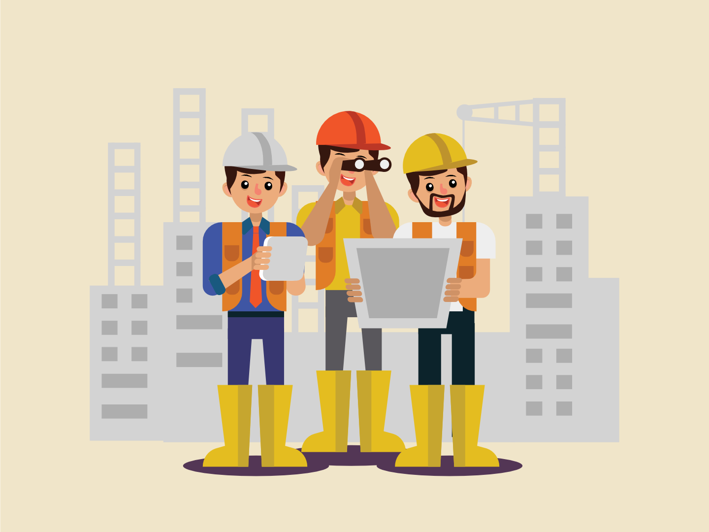

设计生成
博物馆千千万万，这座博物馆为何以作业为主题？在西湖游泳池的场地上，设计者又考虑以何种方式组织起建筑空间？
详细了解→
技术图纸
平面、立面、剖面，将从不同角度诠释这座博物馆。而在总览全局之后，还可以去瞧瞧细部，了解柱、梁、栏杆等构件将以何种方式搭接。
详细了解→

效果展示
树木掩映，轻盈悬空。斜檐成坡，立柱成林。东看、西看、南看、北看；上至高空俯视，下至广场旁观——处处有精彩。
详细了解→
更多内容
概念、图纸、渲染，样样都在讲述这座博物馆的故事，但故事可还有很多很多。更多的内容，在此与你分享！
详细了解→